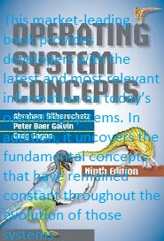
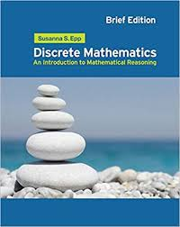
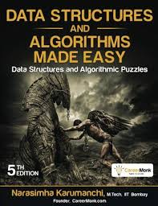
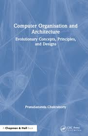
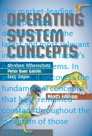
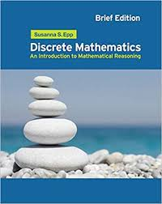
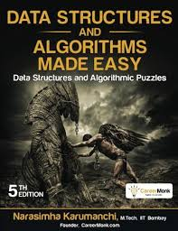
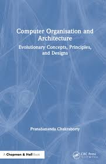

The author of this book is Yashavant Kanetkar. Let Us C has become an important part of my life. I have created and nurtured it for last decade and half.
While doing so, I have received, in
addition to the compliments, a lot of suggestions from students,developers, professors, publishers and authors. So much have their
inputs helped me in taking this book up to its fourteenth edition that ideally I should put their names too on the cover page.
AUTHOR- Abraham Silberschatz is the Sidney J. Weinberg Professor & Chair of Computer Science at Yale University. Prior to joining Yale, he was the Vice President
of the Information Sciences Research Center at Bell Laboratories. Prior to that, he held a chaired professorship in the Department of Computer Sciences at the
University of Texas at Austin.
Operating systems are an essential part of any computer system. Similarly, a course on operating systems is an essential part of any computer-science
education. This field is undergoing rapid change, as computers are now prevalent in virtually every application, from games for children through the
most sophisticated planning tools for governments and multinational firms.Yet the fundamental concepts remain fairly clear, and it is on these that we base
this book.
AUTHOR-PRANABANANDA CHAKRABORTY Computer organization and architecture is becoming an increasingly important core subject in the areas of computer science and its applications, and information
technology constantly steers the relentless revolution going on in this discipline. This textbook demystifies the state of the art using a simple and step-by-step
development from traditional fundamentals to the most advanced concepts entwined with this subject, maintaining a reasonable balance among various theoretical principles,
numerous design approaches, and their actual practical implementations. Being driven by the diversified knowledge gained directly from working in the constantly changing
environment of the information technology (IT) industry, the author sets the stage by describing the modern issues in different areas of this subject.
AUTHOR-SUSANNA S.EPP .Discrete mathematics is the study of mathematical structures that are fundamentally discrete rather than continuous. In contrast to real numbers that have the property of varying "smoothly",
the objects studied in discrete mathematics – such as integers, graphs, and statements in logic[1] – do not vary smoothly in this way, but have distinct, separated values.Discrete mathematics
therefore excludes topics in "continuous mathematics" such as calculus or Euclidean geometry. Discrete objects can often be enumerated by integers. More formally, discrete mathematics
has been characterized as the branch of mathematics dealing with countable sets[4] (finite sets or sets with the same cardinality as the natural numbers). However, there is no exact definition
of the term "discrete mathematics."Indeed, discrete mathematics is described less by what is included than by what is excluded: continuously varying quantities and related notions.
AUTHOR-NARSIMHA KARUMANCHI.Mother and Father, it is impossible to thank you adequately for everything you have done, from loving me unconditionally to raising me
in a stable household, where your persistent efforts and traditional values taught your children to celebrate and embrace life. I could not have asked for
better parents or role-models. You showed me that anything is possible with faith, hard work and determination.
This book would not have been possible without the help of many people. I would like to express my gratitude to all of the people who provided support, talked things over, read, wrote, offered
comments, allowed me to quote their remarks and assisted in the editing, proofreading and design. In particular, I would like to thank the following individuals:
▪ Mohan Mullapudi, IIT Bombay, Architect, dataRPM Pvt. Ltd.
▪ Navin Kumar Jaiswal, Senior Consultant, Juniper Networks Inc.
▪ A. Vamshi Krishna, IIT Kanpur, Mentor Graphics Inc.
▪ Cathy Reed, BA, MA, Copy Editor